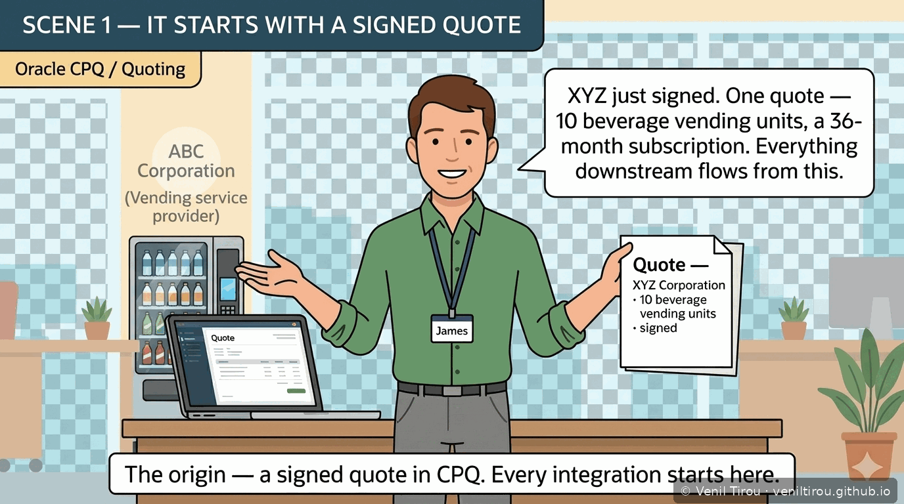
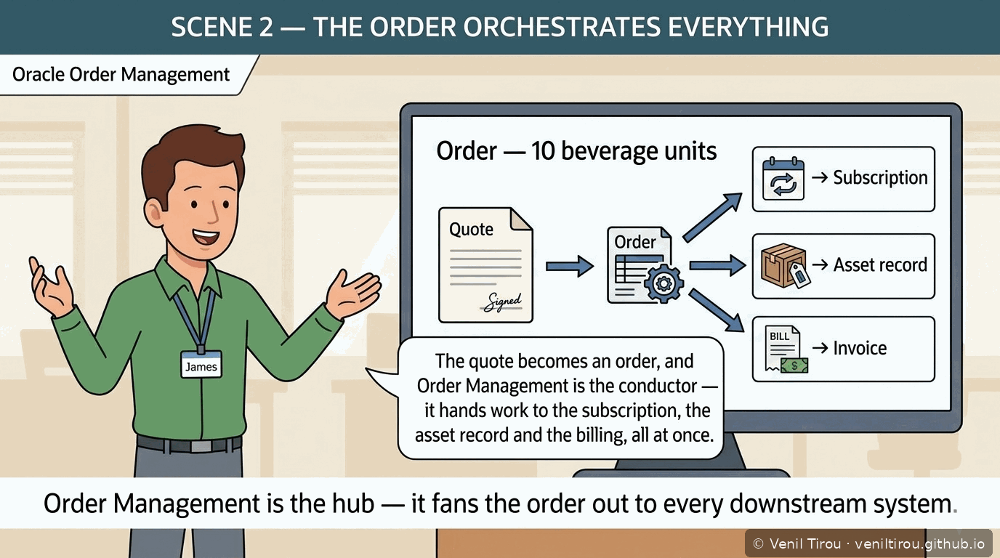
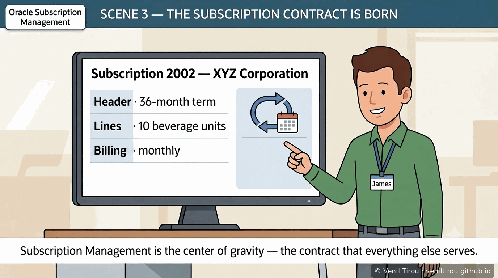
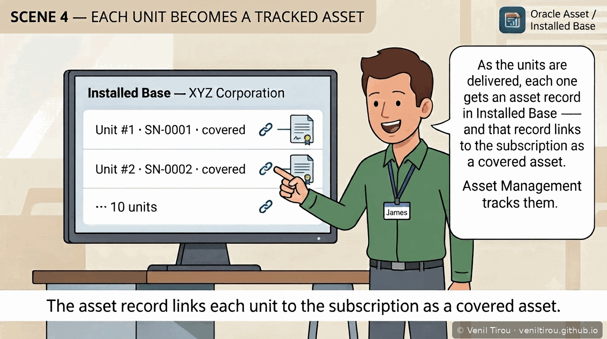
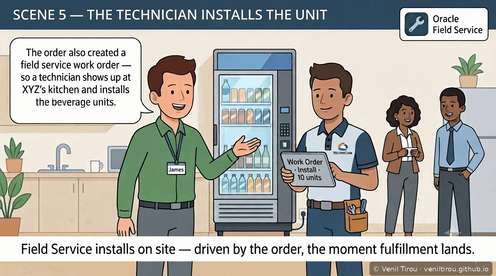
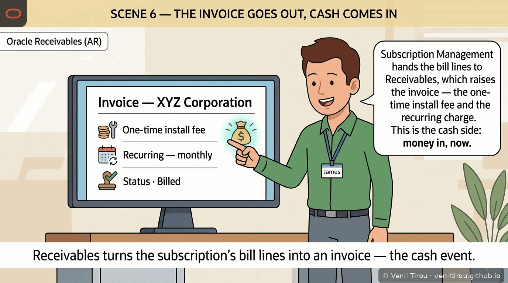
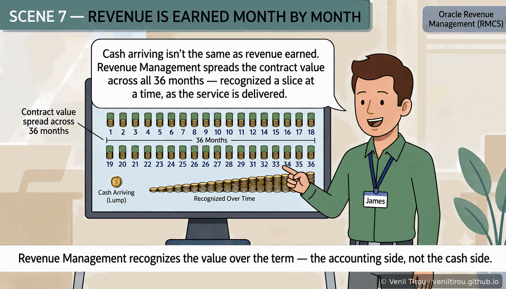
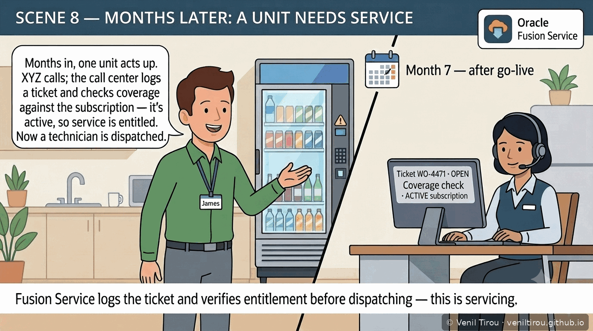
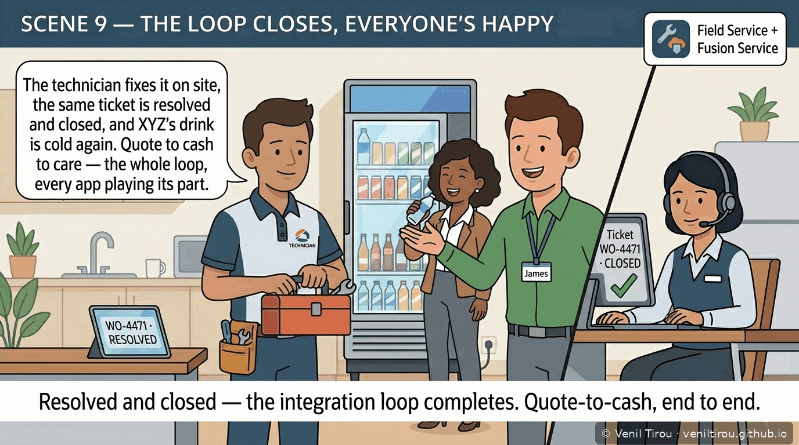
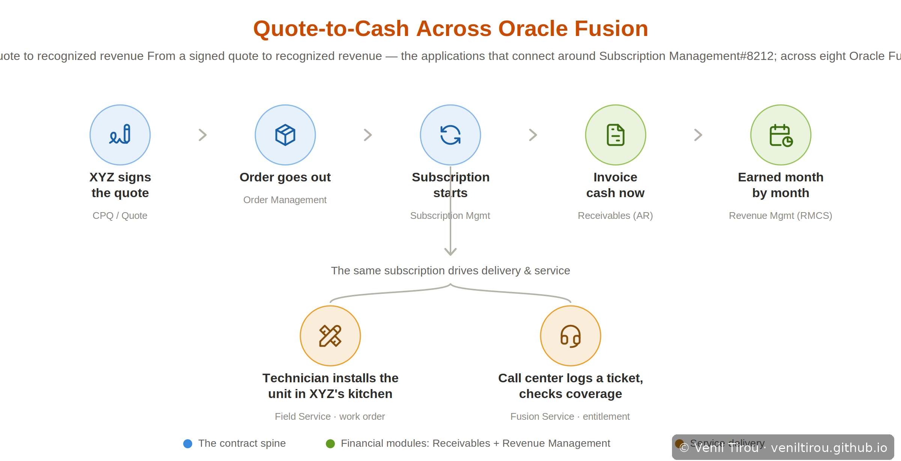

Quote-to-Cash Across Oracle Fusion
Subscription Management doesn't work alone. This chapter follows one XYZ Corporation deal — 10 beverage vending units on a 36-month subscription — as it moves through eight connected Oracle Fusion applications, from the signed quote all the way to recognized revenue and a closed service ticket. Each scene names the application in play and spells out the integration point: who hands what to whom, and why it matters.
The Storyboard
📱 On mobile? Pinch to zoom on any panel to read the screens and speech bubbles. Each scene names its Oracle Fusion application and states the integration point below the image.
1It Starts with a Signed Quote Oracle CPQ / Quoting

What this shows: Everything downstream begins with one artifact — the signed quote in CPQ. XYZ commits to 10 beverage vending units on a 36-month subscription. Until this quote exists, nothing is created in any other application. This is the upstream origin of the entire quote-to-cash flow.
2The Order Orchestrates Everything Oracle Order Management

What this shows: The quote becomes an order, and Order Management is the orchestration hub. From this single order it fans work out in parallel — creating the subscription, triggering the asset records, and feeding the billing. Order Management is the conductor upstream of Subscription Management, not a step after it.
3The Subscription Contract Is Born Oracle Subscription Management

What this shows: Subscription Management converts the order lines into a live contract — a header (36-month term), lines (10 covered units), and a monthly billing schedule. This is the center of gravity: every other application in this chapter either feeds it or is driven by it.
4Each Unit Becomes a Tracked Asset Oracle Asset / Installed Base

What this shows: As units are delivered, each one gets an asset record in Installed Base, linked to the subscription as a covered asset. Asset Management tracks the units — it does not build them. This covered-asset link is exactly what lets Field and Fusion Service verify what's covered later on.
5The Technician Installs the Unit Oracle Field Service

What this shows: The same order also creates a Field Service work order, so a technician installs the units on site at XYZ. The key point: this install is driven by the order — not by a support call. The moment fulfillment lands, the work order dispatches.
6The Invoice Goes Out, Cash Comes In Oracle Receivables (AR)

What this shows: Subscription Management hands its bill lines — the one-time install fee and the recurring monthly charge — to Receivables, which raises the invoice. This is the cash side of quote-to-cash: money billed and collected. Financial module 1 of 2.
7Revenue Is Earned Month by Month Oracle Revenue Management (RMCS)

What this shows: Cash arriving is not the same as revenue earned. Revenue Management spreads the contract value evenly across all 36 months, recognizing a slice each period as the service is delivered. This is the accounting side — deliberately distinct from the cash side in Scene 6. Financial module 2 of 2.
8Months Later: A Unit Needs Service Oracle Fusion Service

What this shows: Well after go-live (Month 7 here), a unit acts up. XYZ calls; the call center logs a ticket in Fusion Service and checks entitlement against the subscription — it's active, so service is covered. Only then is a technician dispatched. This is servicing, not install — and it's why the covered-asset link from Scene 4 matters.
9The Loop Closes, Everyone's Happy Field Service + Fusion Service

What this shows: The technician resolves the issue on site and the same ticket (WO-4471, open in Scene 8) is closed. Quote-to-cash becomes quote-to-cash-to-care: CPQ, Order Management, Subscription Management, Asset/Installed Base, Field Service, Receivables, Revenue Management, and Fusion Service have each played their part in one connected loop.
The Whole Story in One Map

The nine scenes, summarized: a signed quote flows into the order, which orchestrates the subscription, the asset records and the billing; Receivables invoices the cash while Revenue Management recognizes the value over the term; and Field Service and Fusion Service deliver and support the units. The two green steps — Receivables and Revenue Management — are the financial modules that make this a genuine cross-module, quote-to-cash flow.
Why This Chapter Matters
Concepts Covered
| Concept | What it means | Scene |
|---|---|---|
| Upstream vs. downstream | Which applications feed the subscription (CPQ, Order Management) and which it feeds (AR, Revenue, Service). | 1–3 |
| Orchestration hub | Order Management fans one order out to many applications in parallel. | 2 |
| Covered asset | Each Installed Base asset record links to the subscription, defining what's under coverage. | 4 |
| Order-driven install | The install work order comes from fulfillment of the order — not from a support call. | 5 |
| Cash vs. recognition | Receivables bills the cash; Revenue Management recognizes the value over the term. | 6–7 |
| Entitlement check | Fusion Service verifies subscription coverage before dispatching a technician. | 8 |
| Service loop closure | The same ticket is opened, verified, resolved and closed — the loop completes. | 8–9 |